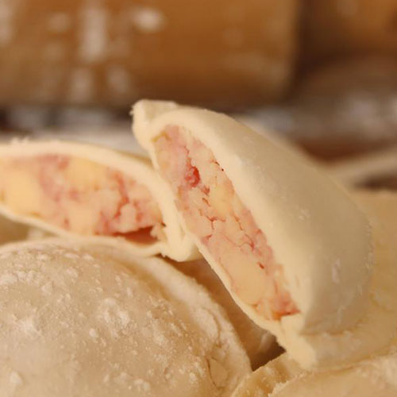

Receta de Sorrentinos Caseros, paso a paso,
para disfrutar de una deliciosa pasta casera Mirá nuestro tutorial de youtube
Hoy mostramos cómo preparar Sorrentinos, una pasta muy típica en Argentina, pero que es básicamente un Raviol con forma redonda.
Si bien en Italia los ravioles tienen formas variadas, en Argentina un Raviol siempre es cuadrado, en cambio el Sorrentino es Redondo y sin terminación “dentada”, su borde es liso.
Otra diferencia con los Ravioles, es que por lo general el relleno de los Sorrentinos siempre es de jamón y queso o tal vez con un agregado de ricotta. A diferencia de los ravioles que se preparan con una amplia variedad de rellenos.
La masa de sorrentinos es la misma masa que se utiliza para el resto de las pastas frescas con huevo.
Además de preparar pasta casera, no te pierdas
todas nuestras Recetas de Salsa para Pastas para
disfrutarlos de la manera más rica!
Ingredientes para la Masa
Harina de Trigo “000” 300 Gr. (floja o todo uso)
Huevos 3 unidades
Sal
agua templada 200cc
aceite 15ml
Ingredientes para el relleno
Jamón 200gr
Queso (quatirolo / muzzarela) 400gr
Rinde 30 Sorrentinos (unas 3 o 4 porciones) para disfrutar de un exquisito domingo de pasta casera!
Procedimiento
Cómo preparar Masa
para Sorrentinos
Colocar la harina sobre la mesa, formar una corona con la mano o utilizando un bowl y colocar los huevos en el centro.
Batir los huevos con un tenedor para desligar y de a poco ir incorporando la harina.
Luego amasar bien, durante unos 10 minutos aproximadamente, la masa debe quedar lisa y pareja.
Cubrir la masa con film (o bolsa plástica) y dejar reposar durante 20 minutos.
Tomar la masa ya descansada, dividirla en dos partes y reservar una cubierta.
Espolvorear harina sobre la mesa de trabajo y sobre la masa, luego hacer presión con las manos para quitarle altura la masa y poder colocarla en la máquina.
Estirar con la máquina de pasta, desde el nivel más grueso hasta el más fino hasta que se pueda ver a través de la masa.
Cómo preparar Relleno para Sorrentinos

Cortar el queso en cubos y el jamón en trozos.
Luego colocar todo entro de una procesadora y comenzar a procesar hasta obtener una pasta uniforme.
Tomar porciones de 25 Gr. con una cuchara y dar forma de bola.
Colocar sobre una fuente y repetir hasta completar todo el relleno.
Reservar.
Cómo cocinar los Sorrentinos
Disponer sobre una fuente o tabla de madera hasta el momento de cocinarlos.
Para la cocción, hervir abundante agua con una pizca de sal.
Colocar los sorrentinos y cocinarlos durante unos minutos (aproximadamente 5 minutos) hasta que estén con la consistencia deseada.
Servir, acompañar con una Salsa a gusto y disfrutar!!